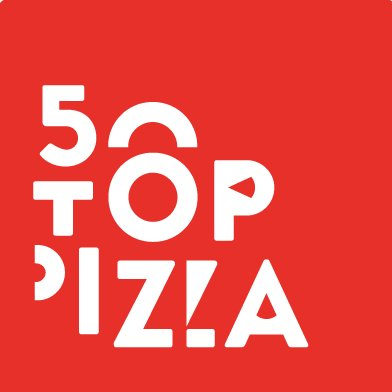
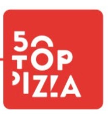
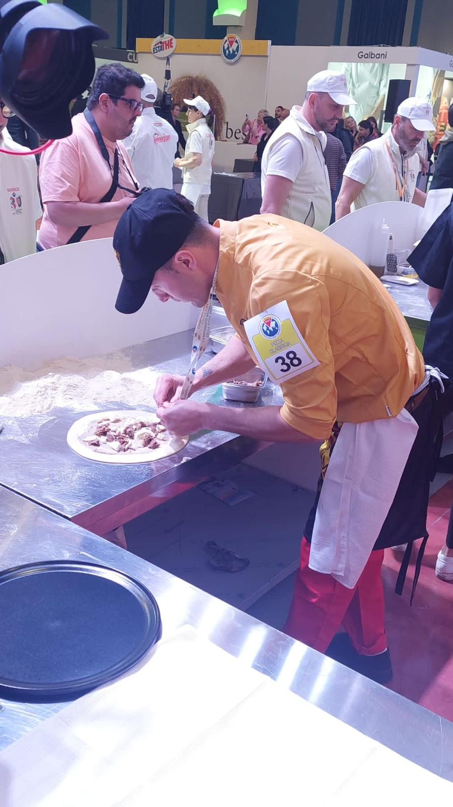
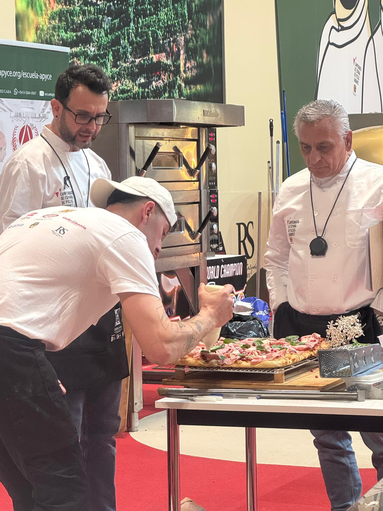

Rústica Napoletana
La mesa está puesta
Pizzas, ensaladas, focaccia y entrantes — elaborado con producto italiano e ingredientes de la Sierra.


Dal fornocon amore
Guía Repsol 2026

2º Mejor Pizzero de España 2026

Top 7 Pizzeros de España 2026/27
2× Mejor Pizza Sin Gluten
Participante La Mejor Pizza
Cargando carta…
01 — Fresco
02 — Para abrir boca
Cuatro platos para recorrer la esencia de Rústica: producto, horno y combinaciones con carácter propio.
Cuatro recetas con personalidad propia. Silvestre encabeza la selección después de llegar a una final nacional.
03 — Dal forno
04 — Ligera y crujiente
05 — Pequeño formato
06 — De aquí cerca
07 — Para brindar
08 — La dolce vita
Un últimobocado
Mesa, fuego y noticias
Formulario preparado · conexión con Mailrelay pendiente
 010104
010104 05
05